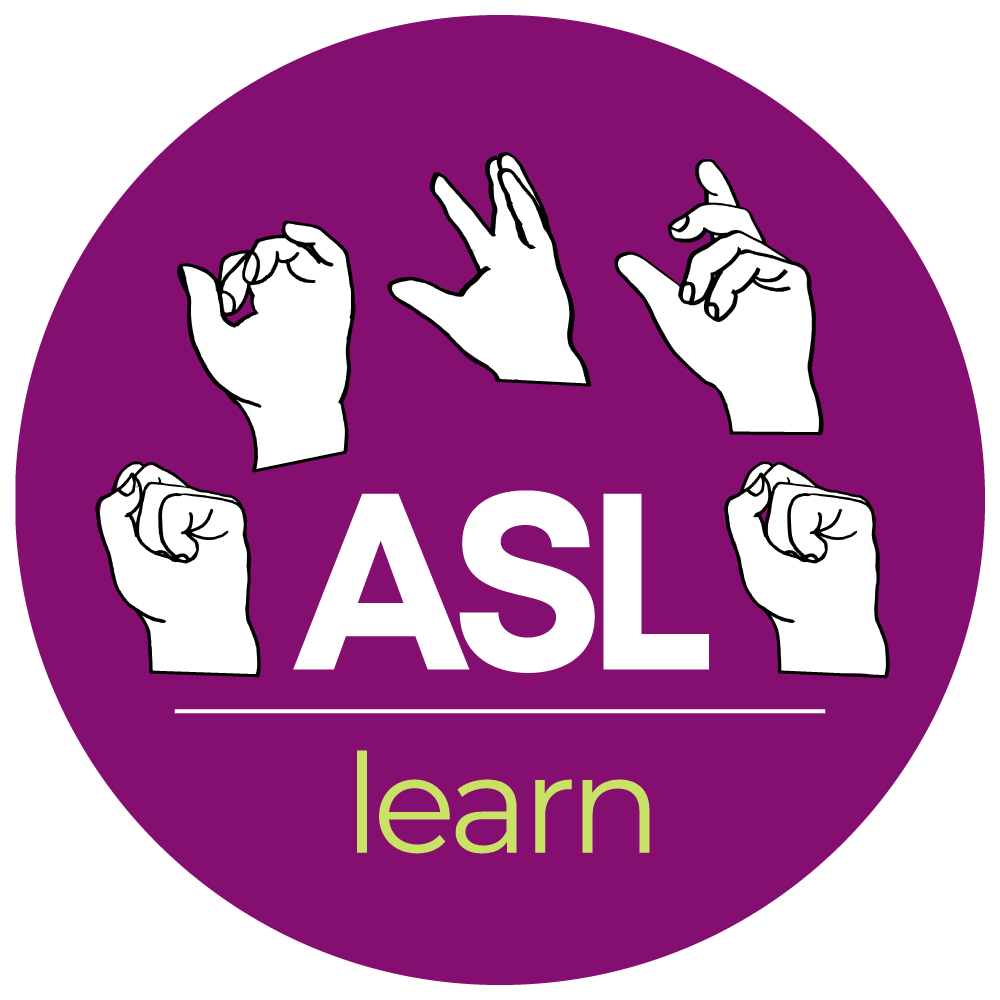
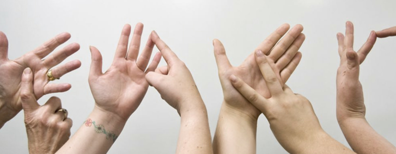

Machine Learning Based

Sign Language Translate System

Welcome to !!!..
Sign Language Translator
Join Here
Proceed
Train Gestures
Train about 30 samples of your Start Gesture and 30 for your idle, Stop Gesture.
Next
Translate
Back to Training
Status: Not Ready
Start Gesture
Clear
Stop Gesture
Clear
Add Gesture
Done Retraining
Start Signing!